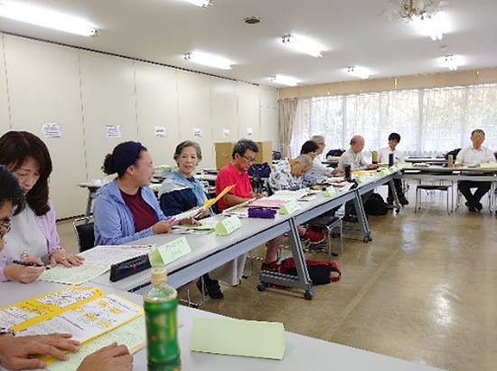

2019さよなら原発埼玉県民集会を開催しました
2019さよなら原発埼玉県民集会実行委員会
10月5日（土）10時より、市民会館おおみや（さいたま市）にて、県内で脱原発や再生可能エネルギーへの転換に取り組んでいる団体による団体交流会を、13時50分より埼玉県民集会を開催しました。実行委員会は19団体で構成しました。
県内団体交流会（10時～11時45分）

埼玉県内で脱原発や再生可能エネルギーへの転換に取り組んでいる団体が集まり、交流会を開催しました。交流会には、16団体24人が参加して活動の報告と報告を受けて質疑応答を行いました。事前に、各団体の活動紹介の提出を呼びかけ、41団体の活動を当日配布した集会パンフレットに掲載しました。
埼玉県民集会（13時50分～16時40分）
開会に先立ち、アトラクションとして埼玉のうたごえ協議会による｢子どもの大空｣｢約束のうた｣の合唱が行われました。その後、実行委員長の田中熙巳さんによる開会のあいさつを行い、報告に移りました。原発避難者と歩む＠川越の鈴木直子さんからは「自主避難者の現状について」、避難の協同センター事務局長の瀬戸大作さんからは「原発事故避難者を追い詰める期限を決めた自立の強制」と題して、自主避難者に対する国の対応を中心に報告いただきました。
報告に続いて「忘れない、悲惨なフクシマ事故－目を覚まして、原子力を廃絶しよう」と題して、元京都大学原子炉実験所助教の小出裕章さんを講師に、講演いただきました。小出さんは、原子力は科学の最先端だと思われているが、実際は「古めかしい蒸気機関」だと指摘。原子力発電の様々な問題点についてお話しいただきました。また、東海第二原発の問題にも触れ、首都圏から150km圏内に位置し、半径30メートル圏内には94万人が生活しており、事故が起きれば首都圏が大規模な汚染を受けることなどを指摘されました。最後に｢原子力の暴走を許したシニア世代が、意識的に原子力の息の根を止めなければならない｣と締めくくりました。
約850人が参加しました。